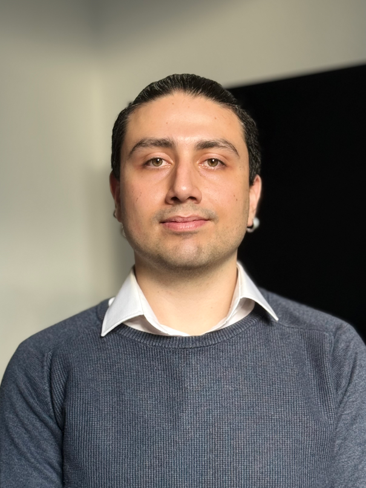

Building across data, product, and AI — one shipped thing at a time.
I work where data, product, and AI meet — equally comfortable shipping iOS apps, validating credit risk models, automating SAP master-data workflows, or translating stakeholder needs into agile sprints. MSc in Statistics & Data Science (ML specialization) from LMU Munich, with prior experience as a Product Owner at SCW.AI and validating credit risk models at Yapı Kredi Bank. Currently building automated workflows at Infineon Technologies while independently shipping AI-native iOS apps. Industrial Engineering foundation; comfortable across semiconductors, supply chain, and finance.
An agentic, LLM-powered iOS audio tour guide. Generates real-time walking tours with voice output by chaining LLM reasoning, API tool calls, and on-the-fly adaptation to user preferences. Built solo in Swift.
An AI-generated narrative game for iOS. Players input a life decision and receive a personalized 14-day branching story; an agentic pipeline handles plot branching, character continuity, and daily delivery. Built solo in Swift.
"Robust SGD by Developing a Sample Selection Algorithm on Image Classification Tasks." Includes hasa, a Python package implementing the proposed sample-selection method, published on PyPI.
An agentic AI pipeline built for a consulting engagement that automatically codes open-ended survey responses on relevancy, effort, and clarity (1–3 scale), replacing manual qualitative analysis.
A Python RAG service that answers questions over technical PDFs and returns answers with cited source pages. Combines vector search and BM25 with reciprocal rank fusion and cross-encoder reranking, plus an LLM-as-judge eval harness (15-question golden set) tracking retrieval hit-rate and answer faithfulness. Shipped as a FastAPI service in Docker.
An agentic incident-to-ticket pipeline for a chip-development and functional-safety setting. A Gemini agent reads a messy incident report, investigates it with tools over synthetic data, reasons about the root cause, and drafts a structured ticket. Around the agent sits a deterministic reliability layer: outputs must pass a strict Pydantic schema, the root cause must be grounded in the evidence the tools actually returned, and anything touching a safety-rated (ASIL / ISO 26262) component is routed to a human regardless of confidence. Built with FastAPI and streams the reasoning trace live.
Focus: Data-driven decision making, predictive analytics, statistical computing, deep learning.
Thesis: Robust SGD by Developing a Sample Selection Algorithm on Image Classification Tasks.
Honors: Cum Laude (GPA 3.36/4.0). Strong foundation in optimization algorithms, stochastic processes, and system engineering. Ranked top ~0.15% in Turkish university entrance exam (~3,000 / 2M+ candidates).
Graduated from one of Turkey's nationally-selective science high schools (Fen Lisesi system; admission top ~0.1% nationally).